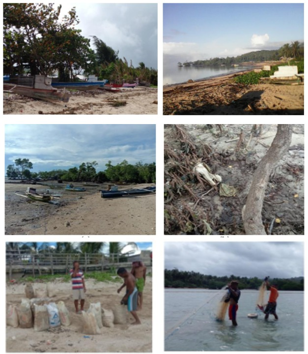

Human–Environment Interactions and Coastal Ecosystem Degradation in Atubul Da Village
Introduction
Human activities in coastal areas play a significant role in shaping ecosystem condition and resilience. In small island and rural coastal communities, interactions between human use and natural systems often result in cumulative pressures on coastal ecosystems.
Forms of Human Pressure
In Atubul Da Village, human activities such as coastal resource use, settlement proximity to shorelines, and daily livelihood practices were observed to influence the physical condition of mangrove, seagrass, and coral reef ecosystems. These pressures vary spatially and reflect patterns of human dependence on coastal resources.
Ecosystem Responses
The observed ecosystems showed differing responses to human pressure, ranging from reduced vegetation density in nearshore seagrass areas to physical disturbances in coral reef environments. Such responses indicate how human activities can alter ecosystem structure and ecological function over time.
Implications for Sustainable Management
Understanding human–environment interactions is essential for developing effective and socially appropriate coastal management strategies. Integrating local community practices into management frameworks can support more sustainable and adaptive approaches to conserving coastal ecosystems.
Forms of Human Pressure
In Atubul Da Village, human activities such as coastal resource use...
